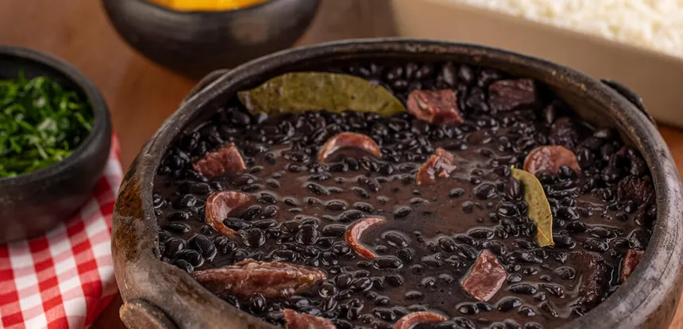
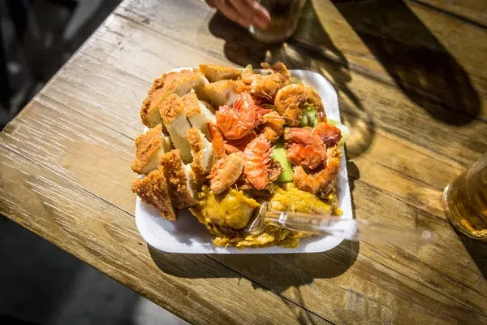

Gastronomia Brasileira
A culinaria brasileira e reflexo da diversidade cultural do pais. Influenciada por povos indigenas, africanos e europeus, cada regiao possui sabores e pratos tipicos que contam a sua historia.
Feijoada
Considerada o prato nacional do Brasil, a feijoada e um ensopado de feijao preto com carnes variadas, geralmente servido com arroz, couve refogada, farofa e laranja. Tradicional nas mesas brasileiras desde o periodo colonial.

Acaraje - BA
Tipico da Bahia e de origem africana, o acaraje e um bolinho de feijao-fradinho frito no azeite de dende, recheado com vatapa, camarao e pimenta. E patrimônio cultural imaterial do Brasil.

Tacacа - AM
Caldo tipico da Amazonia preparado com tucupi, jambum, camarao seco e goma de tapioca. Servido quente em cuias, e um dos simbolos da gastronomia paraense e amazonense.
Chimarrao - RS
O chimarrao e a bebida mais representativa da cultura gaucha. Preparado com erva-mate e agua quente, e tomado em cuia e compartilhado entre amigos e familia como ritual de hospitalidade.